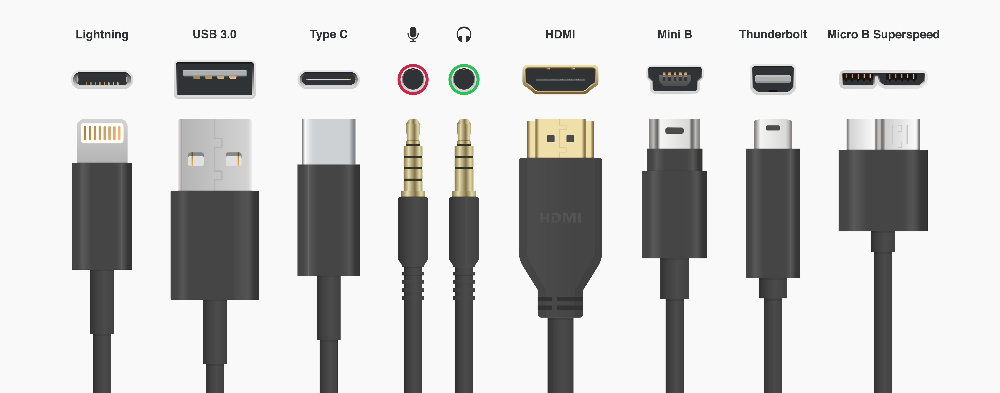
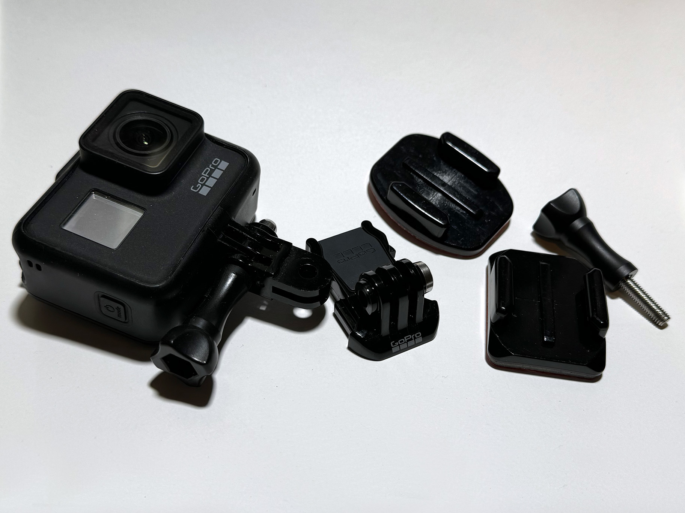

What You Should Know - 3Doodler Start+: Label a Cable
 Important Vocabulary
Important Vocabulary
- System - a set of parts or components that work together to do something
- Component - a piece of a system or design that helps the system work
- Symbol - an icon or image that represents something else
Types of Cables
Cables are used for many purposes. In the SmartLab, there are different cables for different kits and pieces of technology. While some cables can be used for multiple kits, other kits have special cables that only work with that technology. What cables do you recognize in the image below?

Symbols and Icons
Symbols communicate messages quickly and clearly across multiple languages and settings. Designing a symbol to be easily understood can be a difficult task. It should be easy to see what the symbol represents, and unique enough to avoid confusing it with other symbols. What do each of the symbols represent below?

USB
USB is used to connect devices to computers and to charge technology.

Recycle
This symbol is used to communicate that something can be recycled.

Save
This save icon represents the process of saving a computer file to a disk.

Phone
This symbol can represent a phone call or phone number.
Examples of Systems
When you design a product, creating a system can make a product easier to use. Think about LEGO, GoPro, and IKEA furniture. LEGO uses a system of bricks and other pieces that fit together to create amazing constructions. Because of the system, LEGO sets today work with pieces manufactured in 1958!

GoPro uses a system of connections to make its cameras work with a variety of accessories and mounts. This system allows users to quickly move a GoPro camera from one mount to another without the camera falling off or getting damaged.

IKEA designs furniture and many of their products use similar systems for assembly. These systems use the same screws and other hardware to make it easier to put their furniture together. Using systems like this can make it possible to share screws and other parts between products. That is one way IKEA can make less expensive furniture.

Career Connection and Real-World Application
Information Technology (IT)
IT technicians work with thousands of cables every day! They keep cables neat and organized to ensure the systems they support continue working. Those systems are vital to every business, school, and organization in our tech-connected world.
Product Design
Designers gather requirements, create prototypes, and collect feedback to ensure products meet client needs. A great product designer needs technical skills, but the most important skill is empathy. Designers need to understand who will use their products and create solutions based on what is most important to their end users.